อัตราการเกิด (แยกกลางวัน / กลางคืน)
| ม็อบ | กลางวัน | กลางคืน | เจอง่ายแค่ไหน | |
|---|---|---|---|---|
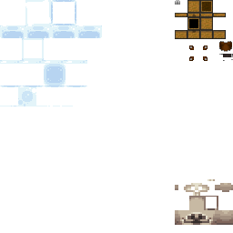 | สไลม์ slime | 1 ใน 3 | 1 ใน 2 | เยอะมาก |
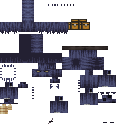 | ไดร์วูล์ฟ direwolf | 1 ใน 2 | 1 ใน 2 | เยอะมาก |
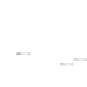 | ออร์ค orc | 1 ใน 4 | 1 ใน 3 | เยอะ |
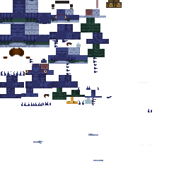 | อาร์เมอร์ซอรัส armorsaurus | 1 ใน 4 | 1 ใน 2 | เยอะ |
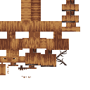 | แคทเทิลเดียร์ cattledeer | 1 ใน 6 | 1 ใน 4 | เยอะ |
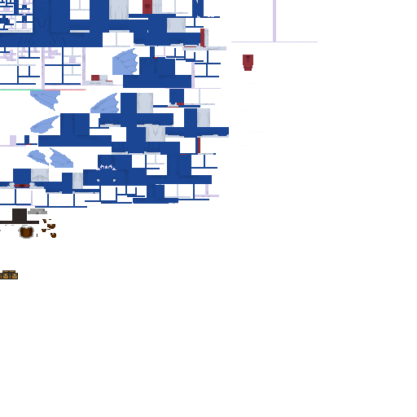 | สเปียร์โทโร่ spearToro | 1 ใน 6 | 1 ใน 6 | เยอะ |
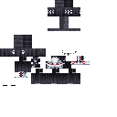 | บาร์เกสต์ barghest | 1 ใน 7 | 1 ใน 5 | ปานกลาง |
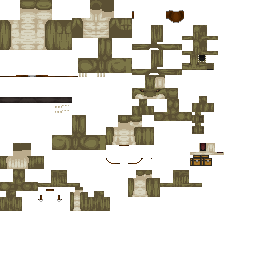 | กิ้งก่าโฉบ hover | 1 ใน 7 | 1 ใน 5 | ปานกลาง |
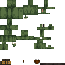 | กิ้งก่าปลิง leech | 1 ใน 7 | 1 ใน 5 | ปานกลาง |
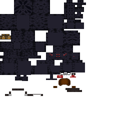 | แมงมุมดำ blackSpider | 1 ใน 8 | 1 ใน 5 | ปานกลาง |
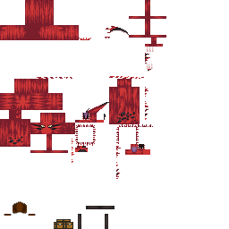 | เสือดาบ bladeTiger | 1 ใน 8 | 1 ใน 6 | ปานกลาง |
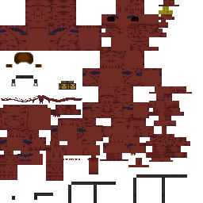 | มดยักษ์ ant | 1 ใน 8 | 1 ใน 6 | ปานกลาง |
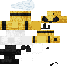 | ตัวต่อทหาร bee | 1 ใน 11 | 1 ใน 8 | ปานกลาง |
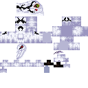 | ผีเสื้อนรก moth | 1 ใน 12 | 1 ใน 9 | ปานกลาง |
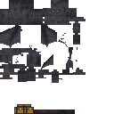 | ค้างคาวยักษ์ giantBat | ไม่เกิด | 1 ใน 4 | กลางคืนเท่านั้น |
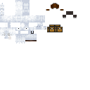 | ยูนิคอร์น unicorn | 1 ใน 24 | 1 ใน 12 | น้อย (ดอกไม้/ภูเขา) |
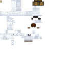 | เพกาคอร์น pegasus | 1 ใน 24 | 1 ใน 12 | น้อย (ภูเขา) |
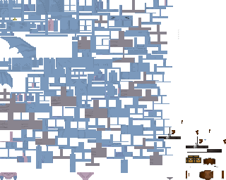 | เมกาโลดอน megalodon | 1 ใน 30 | 1 ใน 15 | น้อย |
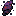 | เลสเซอร์เดมอน lesserDaemon | 1 ใน 40 | 1 ใน 20 | หายาก |
| เกรทเตอร์เดมอน greaterDaemon | 1 ใน 60 | 1 ใน 30 | หายากมาก | |
| อาร์ชเดมอน archDaemon | 1 ใน 80 | 1 ใน 40 | หายากมาก | |
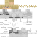 | ผู้ต่างโลก otherworlder | 1 ใน 60 | 1 ใน 30 | หายากมาก |
ตัวแรร์ (เกิดแทนตัวปกติตามโอกาส)
| ตัวแรร์ | โอกาส | หมายเหตุ | |
|---|---|---|---|
 | สไลม์มวลมหาศาล supermassive | 1/1000 ของสไลม์ | ต้านธนู ดรอป core ชัวร์ |
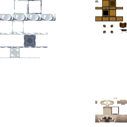 | เมทัลสไลม์ metal | 1/500 ของสไลม์ | ดรอป shard 5-8 |
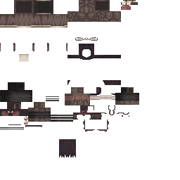 | ออร์คลอร์ด orcLord | 1/900 ของออร์ค | ดรอป royal blood 50% |
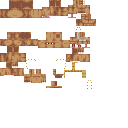 | ออร์ครอยัล orcRoyal | 1/100 | ฟื้นเลือดเองได้ |
| อัลฟ่าวูล์ฟ alphaWolf | 1/10 ของไดร์วูล์ฟ | จ่าฝูง | |
| — | ชิซุ shizu / ฮินาตะ hinata / เกเฮนนา / ดาวสตาร์ / เกรทเตอร์สปิริต | 1/30 / 1/69 / 1/20 / 1/8 / 1/600 | อีเวนต์/เงื่อนไขพิเศษ |
ถิ่นตามไบโอม
| ม็อบ | ที่อยู่ | |
|---|---|---|
| สไลม์มวลมหาศาล | ป่า/ทุ่ง/หนอง ต้านธนู |
| มดยักษ์ | ทุ่ง / รังมด | |
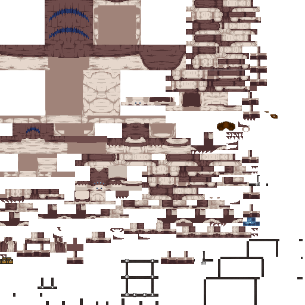 | แมงมุมอัศวิน / ออร์ค | ทะเลทราย |
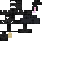 | กระต่ายมีเขา | Taiga / Cherry / Dark Forest |
| ยูนิคอร์น | ภูเขา + Flower Forest | |
| ผีเสื้อนรก | Dark Forest + Pale Garden | |
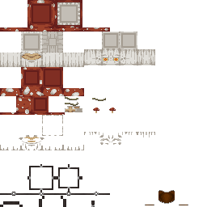 | แฟนตาสปอร์ | Mushroom Fields |
| — | ฟรอสต์มอว์ | หิมะ (ล่องหนขโมยคริสตัล) |
| — | ไซคลอปส์ / กอร์กอน | ริมทะเล / ใต้วิหาร (ห้ามจ้อง) |
ที่มาข้อมูล (ไฟล์เกม)
เรทวัน/คืนจาก spawn_rate_config บรรทัด 39-82 • ตัวแรร์บรรทัด 1-35 • ยูนิคอร์นเฉพาะถิ่นจาก incontrol/spawner.json • ของดรอปดูหน้าดรอป